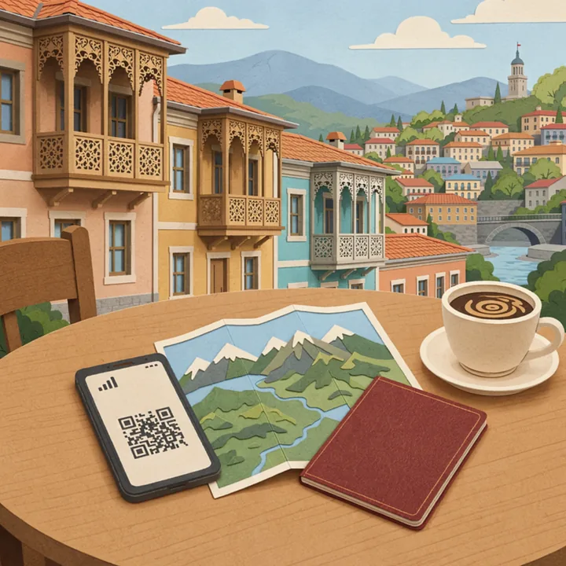
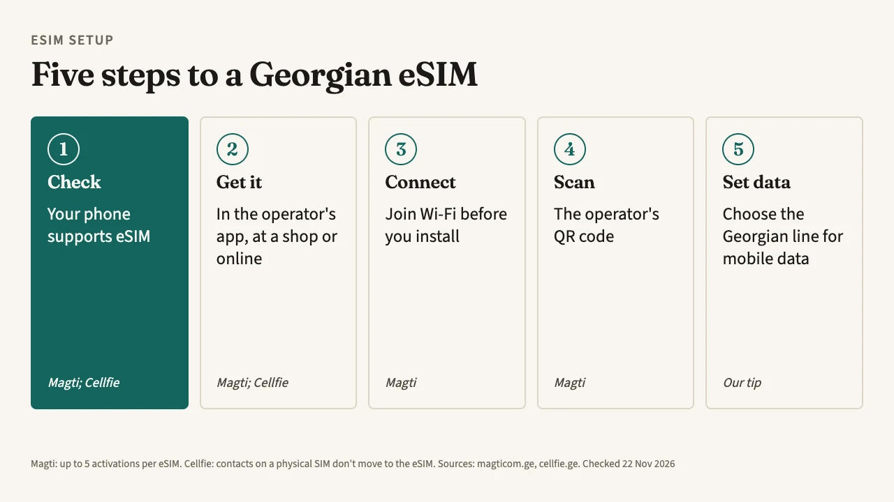

- Magti eSIM activation
- 10 GEL
- Magti tourist package at the airport
- 30 GEL
- Validity of Magti tourist packages
- 15 days
- Emergency number, even with no SIM
- 112
- Georgia's country code
- +995
This page is about Georgia the country, not the US state, and is part of the Georgia Travel Guide. Prices checked on 22 November 2026.
eSIM or a local SIM card in Georgia: which one to get
Both give you the same thing: a local number and mobile data. A Georgia eSIM lives inside your phone, and a physical card goes in the tray. With either one you keep your home line working: one operator describes "two active numbers simultaneously", the other "2 numbers simultaneously".

Choose by your phone and by how you like to buy:
- An eSIM fits if your phone supports it and you would rather skip the shop: you get it in an operator's app or online.
- A physical SIM fits an older phone, or a traveller who prefers to buy over the counter at an operator's office.
Does eSIM work in Georgia?
Yes. Two operators sell it on their own sites, and the third has an eSIM page that explains the technology.
The limit is your handset, not the country. As one operator puts it: "eSIM support depends on the smartphone model."
Check your phone before you fly
Do it at home, while you can still ask your own operator. Cellfie's advice is to "Make sure your phone is certified in Georgia and that it has eSIM support".
Our tip. Look in your phone's settings for an option to add a mobile plan. If you can't find it, or the phone came from your home operator, ask that operator before you travel whether the phone is locked to its network.
Roaming with your home SIM
Your home operator sets its own prices abroad; check them on its site. Tbilisi Airport's Wi-Fi page lists, as the first step to connect: "Disable data service (e.g. 3G or 4G) to avoid the roaming service fee".
Two lines in one phone is a normal setup. One operator gives the example of someone who needs two numbers, "one Georgian and the other foreign".
Our tip. Keep your home SIM in the phone for calls and bank text messages, with mobile data off, and use the local line for data.
Mobile operators in Georgia: Magti, Silknet and Cellfie
This guide covers three operators, and each describes its own offer on its site. Georgia's 112 service names the networks in its list as "Magticom, GeoCell or Beeline"; the operators' own sites give their current names.
We don't rank them: compare how you get the line, where you can buy and the operator maps, below.
Prices in the table are as listed on the operators' pages, checked 22 November 2026.
Magti (Magticom): eSIM and the airport SIM
The operator's official name is Magticom. Its own site says you can activate "a new or existing number with eSIM either via the app/web portal MyMagti or at any Magti service center". Its home page repeats it: "Activate eSIM easily via MyMagti APP".
Reinstalling. "You can activate a purchased eSIM for a maximum of 5 times"; after that, it has to be replaced, for 10 GEL.
Physical card. The operator's tourist offer comes with a free SIM card; the packages and their prices are in the prices section below.
Silknet: tourist packages and eSIM
Silknet has a tourist package page for local and international calls, SMS and internet, and a separate eSIM page.
We could not read the package names or prices on those pages, so we give none: check them on Silknet's site or at its shop.
Cellfie (formerly Beeline): eSIM online
This is the operator formerly known as Beeline, as its 2022 financial report shows. According to its site, you "can purchase it online at 24/7, without visiting a shop".
Prices. The page lists two: "eSIM price is 0 ₾" and "Changing physical SIM with eSIM is 5 ₾".
Two numbers. You can keep a physical card in the phone too, "so you will be able to use 2 numbers simultaneously".
Where to buy a SIM card: Tbilisi and Kutaisi airports, Batumi and online
We found airport offices only on Magti's list, in Tbilisi and Kutaisi, both marked "Limited services". For a SIM card in Tbilisi or another town, its list of offices gives city addresses, and an eSIM bought in an app or online needs no shop at all.
To buy an eSIM in Tbilisi or anywhere else, the route is the same: the operator's app, its website or one of its service centres.
At Tbilisi Airport
Magti's tourist page offers a "FREE SIM card with Welcome Package in Tbilisi or Kutaisi airport", and its list of offices marks the Tbilisi point "Limited services". We could not read the opening hours or the exact spot from that page.
Free Wi-Fi. It works "at most of the seating and public areas", and "No registration is required."
What else is there. See Tbilisi Airport Arrival: What Is in the Hall.
Our tip. Connect to the free network first: message your host and check your operator's page before you queue.
Kutaisi and Batumi airports
In Kutaisi, Magti lists an airport office, again with "Limited services". For Batumi, its list gives only two city offices, on Rustaveli Street and on I. Abashidze Street.
We found no airport offices on the other two operators' sites. On the coast, buy a SIM at an operator's office in town, or order the eSIM that one operator sells online once you reach Wi-Fi.
Do you need a passport for a SIM card in Georgia?
We found no official rule on documents for travellers. Cellfie's subscriber agreement lists "name, surname, date of birth, personal number" among the subscriber details it processes.
Magti's eSIM page does not list the documents.
Our tip. Take your passport when you buy a SIM or visit an operator's shop.

SIM and eSIM prices in Georgia: what Magti and Cellfie charge
For a Georgia SIM card, Magti's tourist package costs 30 GEL for 15 days and includes the card free. Its eSIM costs 10 GEL to activate, as listed on the operators' pages and checked 22 November 2026.
Prices change; check the operator's page before you buy.
Magti's tourist packages
Its page for tourists lists two packages:
| Price | What you get | Validity | Activation, as listed |
|---|---|---|---|
| 30 GEL | Free 4.5G SIM card, 3,000 MB, 30 minutes of international calls, free local calls, free local SMS/MMS | 15 days | 2230 ok |
| 15 GEL | 5,000 MB, free local SMS/MMS | 15 days | 3315 ok |
Both are as listed on that page, checked 22 November 2026. The page gives no dates for the offer and shows "Activation - 2230 ok" without explaining the steps.
The smaller package lists data and texts but no calls, so the bigger one suits you if you need to phone a host or a guide.
eSIM prices: activation and replacement
Magti charges 10 GEL to activate an eSIM, and an existing subscriber pays 10 GEL to replace a physical SIM with one. Cellfie lists it at 0 ₾ and charges 5 ₾ to switch from a physical card, as listed on its page.
Package prices are below; the operators' pages list no total price for a trip.
Monthly plans and how much data you need
Cellfie's home page lists three plans with automatic prolongation, not tourist packages, as listed on 22 November 2026:
- Mini: 7 GEL, 1.5 GB and 100 minutes with other mobile operators.
- Pro: 17 GEL, 7 GB and 500 minutes with all other networks.
- Maxi: 25 GEL and 20 GB.
For Silknet's prices, see its tourist package page.
How much data you need depends on your trip; the operators' pages give no figure for travellers.
Our tip. Download maps and offline translation on Wi-Fi, and pick the bigger package if you plan to navigate all day.
Ride apps need a connection to book a car: see Taxi Apps in Georgia.
How to set up an eSIM for Georgia, step by step
You install it by scanning the QR code the operator gives you, over a wireless connection. The steps, mostly from the operators' own instructions:
- Check support. Make sure your phone supports it; support depends on the model.
- Get the profile. In the MyMagti app or at a service centre, or online.
- Connect to Wi-Fi. The installation guide starts with: "Connect your device to WiFi".
- Scan the code. On an iPhone: Settings → Cellular (or Mobile Data) → Add Cellular Plan. On Android: Settings → Connections → SIM Card Manager → Add Mobile Plan → Add Using QR Code. Then "Scan the QR code received from Magti and follow the instructions."
- Our tip. Name the new line "Georgia", set it for mobile data, and keep your home line for calls and texts.
Contacts. If you switch from a physical card, "the contact list stored on the SIM card will not be automatically transferred to eSIM", Cellfie warns.
Our tip. Before you switch, save your important numbers to the phone, not the SIM.

Mobile coverage in the mountains: check the operator maps
A map helps you plan, but it is only a guide. Cellfie publishes a network map, but its subscriber agreement warns: "The map does not guarantee the actual signal of the network coverage area (the map may be updated periodically)".
Magti's offices page carries a coverage map by network type, 2G to 5G. We could not check a coverage map on Silknet's English site; ask in its shops.
5G at Cellfie. Its page names 14 places: Tbilisi, Batumi, Kobuleti, Gonio, Kvariati, Shekvetili, Gudauri, Bakuriani, Zugdidi, Kutaisi, Rustavi, Poti, Telavi and Gori. A mountain resort on that list is not a promise of signal on the trail above it.
High valleys. For mobile internet in Georgia's remote valleys, we found no official data on coverage, so plan as if you may lose the signal. More in Khevsureti and Shatili, Tusheti and Svaneti.
Help may be slow. The UK government warns: "If you get into trouble during hiking, skiing, adventure travel or extreme sports, the emergency response may be limited." Sprains, blisters and when to get help: Hiking in Georgia.
Our tip. Tell your host or guesthouse your route and return time, and save their number before you leave the last village.
Download offline maps before you go
Our tip. Before a trip to the mountains, download the area in your map app and save your accommodation and the nearest town, all on Wi-Fi. Check that the app shows your position offline before you leave.
If you need help with no data left, the official emergency app has a chat with the call-taker. With GPS on, the chat sends your location coordinates, and if you have run out of data, they are sent "in the form of SMS". More in No SIM Card, No Credit on the Phone or Can't Talk.
Keep your phone charged
The UK government advises travellers to "always keep your mobile phone charged and with you". The Government of Canada, in its advice on driving, says "always carry a cell phone and charger".
Our tip. Take a power bank on day hikes and long drives.
Call 112 even without a SIM card
No card in the phone and no credit still let you call. Georgia's emergency service says: "112 can be reached using cell phones, without indicated index, even if the phone has a negative balance, or no SIM-card is inserted".
One condition. The phone must be within a mobile operator's coverage area.
Languages. Calls are taken 24/7 "throughout the whole country", in Georgian, English, Azerbaijani, Armenian, Turkish and Russian.
The app. It is free of charge, works on Android and iOS and comes in five languages. The Government of Canada adds: "You can also use the 112 Georgia mobile application to contact emergency service providers in English." What to say when you get through: What to Tell the Operator.
Underground. In the metro, check the signal before you need it: If Something Happens in the Metro.
Country code. Georgia's country code is +995.
Our tip. Save your host's and guide's numbers with the country code, so they also work from your home SIM.
If anyone is badly hurt, call 112 first.
If you need a doctor for something that can wait, you can browse doctors and clinics in Tbilisi.

Wi-Fi in Georgia: a backup, not your only connection
Free Wi-Fi is handy, and on landing in Tbilisi you can use it without registration, but public networks carry a risk. The Government of Canada's travel advice warns: "Criminals can compromise public Wi-Fi networks to steal personal data or credit card information."
What it advises. In the same list: "Use secure public Wi-Fi networks" and "Use your own USB adaptor or carry an extra battery pack".
Cards and cash. Before you pay on a public network, read Card and ATM Fraud.
Our tip. Pay and log in to your bank over mobile data, not café or hotel Wi-Fi.
Frequently asked questions
Does Magti have eSIM?
Can I buy an eSIM from a Georgian operator online?
Does Silknet have eSIM?
Can I buy a SIM card at Tbilisi Airport?
Do I need a passport for a local SIM card?
Which is the best SIM card for Georgia?
Does 112 work without a SIM card?
Sources
- magticom.ge: eSIM ↑
- cellfie.ge: eSIM ↑
- magticom.ge: SIM cards for tourists in Georgian airports ↑
- magticom.ge: offices ↑
- cellfie.ge: subscriber agreement ↑
- 112.gov.ge: calling without a SIM card ↑
- 112.gov.ge: frequently asked questions ↑
- GOV.UK foreign travel advice — safety and security ↑
- silknet.com: eSIM ↑
- tbilisiairport.com: Internet / Wi-Fi ↑
- magticom.ge: home page ↑
- silknet.com: tourist package ↑
- cellfie.ge: 2022 financial report, corporate information and new brand ↑
- cellfie.ge: home page (tariffs) ↑
- cellfie.ge: network map ↑
- cellfie.ge: fifth-generation network ↑
- 112.gov.ge: the mobile app ↑
- Government of Canada: travel advice and advisories ↑
- itu.int: ITU-T E.164 list of country codes (2016) ↑
This guide is general information. Prices, packages and coverage change: check the operators' pages before you buy.